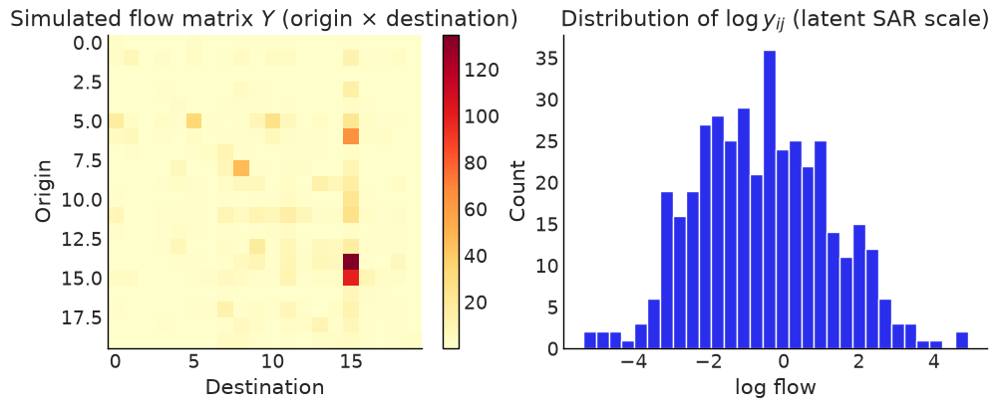
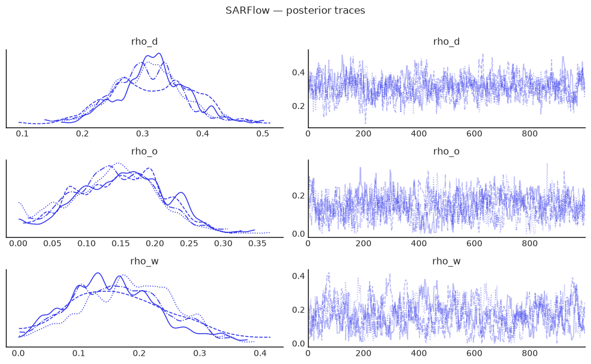
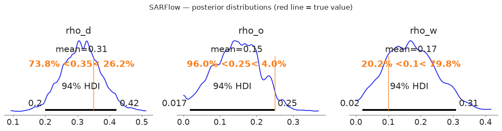
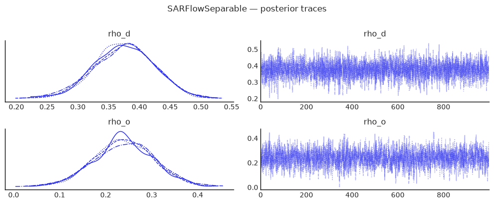
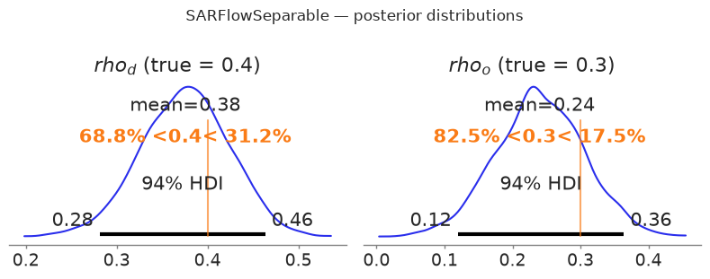

How to estimate origin–destination flow models¶
You have flows between places — trade, migration, commuting, foot traffic — and you want to know whether a flow into one destination depends on flows into its neighbours, on flows out of neighbouring origins, or both.
SARFlow estimates all three spatial parameters freely; SARFlowSeparable
pins \(\rho_w = -\rho_d\rho_o\), which removes a weakly-identified ridge and is
the better default. Both implement the LeSage–Fischer (2008) SAR flow
framework. Equations, the full class list and the log-determinant options are
in Supported Models.
Set up¶
import warnings
import arviz as az
import matplotlib.pyplot as plt
import numpy as np
import pandas as pd
from neighbayes.dgp.flows import generate_flow_data, generate_flow_data_separable
from neighbayes.graph import flow_design_matrix
from neighbayes.models import SARFlow, SARFlowSeparable
warnings.filterwarnings("ignore")
az.style.use("arviz-white")
rng = np.random.default_rng(42)
/home/runner/micromamba/envs/test/lib/python3.14/site-packages/tqdm/auto.py:21: TqdmWarning: IProgress not found. Please update jupyter and ipywidgets. See https://ipywidgets.readthedocs.io/en/stable/user_install.html
from .autonotebook import tqdm as notebook_tqdm
Build the flow data and design matrix¶
We simulate flow data on \(n = 12\) spatial units, giving \(N = 144\) O-D pairs.
When neither G nor gdf is supplied, generate_flow_data
synthesises a point grid, builds a row-standardised KNN graph
(knn_k=4 by default) and computes the pairwise distance matrix used
for the gravity-style log_distance regressor.
True parameters
Parameter |
Value |
|---|---|
ρ_d |
0.35 |
ρ_o |
0.25 |
ρ_w |
0.10 |
β_d |
[1.0, −0.5] |
β_o |
[0.5, 0.3] |
σ |
1.0 |
γ_dist (log_distance coef.) |
−0.5 (default) |
# True parameters (matching the table above)
RHO_D = 0.35
RHO_O = 0.25
RHO_W = 0.10
BETA_D = [1.0, -0.5]
BETA_O = [0.5, 0.3]
SIGMA = 1.0
# Generate synthetic flow data (auto-builds KNN graph + distance matrix)
data = generate_flow_data(
n=20,
rho_d=RHO_D,
rho_o=RHO_O,
rho_w=RHO_W,
beta_d=BETA_D,
beta_o=BETA_O,
sigma=SIGMA,
seed=42,
)
n = 20
N = n * n
G = data["G"]
gdf = data["gdf"]
print(f"Generated {N} O-D flows on {n} spatial units")
print(f"Design matrix: {data['X'].shape}, columns: {data['col_names']}")
print(f"Design: k_d={data['design'].k_d}, k_o={data['design'].k_o}")
Generated 400 O-D flows on 20 spatial units
Design matrix: (400, 9), columns: ['intercept', 'intra_indicator', 'dest_x0', 'dest_x1', 'orig_x0', 'orig_x1', 'intra_x0', 'intra_x1', 'log_distance']
Design: k_d=2, k_o=2
y_obs = data["y_vec"] # observed (positive) flows
y_vec = np.log(y_obs) # latent SAR scale (DGP default is lognormal)
X = data["X"] # (N, p) design matrix (incl. log_distance column)
col_names = data["col_names"]
G = data["G"].transform("r") # row-standardised KNN graph synthesised by the DGP
gdf = data["gdf"] # synthetic point GeoDataFrame
print(f"Flow observations: N = {N} ({n}×{n})")
print(f"Design matrix shape: {X.shape}")
print(f"Column names: {col_names}")
print(f"Last column ({col_names[-1]}) coefficient (gamma_dist) = {data['gamma_dist']}")
print(
f"\ny (observed) summary: min={y_obs.min():.2f} mean={y_obs.mean():.2f} max={y_obs.max():.2f}"
)
print(
f"y (log scale) summary: min={y_vec.min():.2f} mean={y_vec.mean():.2f} max={y_vec.max():.2f}"
)
Flow observations: N = 400 (20×20)
Design matrix shape: (400, 9)
Column names: ['intercept', 'intra_indicator', 'dest_x0', 'dest_x1', 'orig_x0', 'orig_x1', 'intra_x0', 'intra_x1', 'log_distance']
Last column (log_distance) coefficient (gamma_dist) = -0.5
y (observed) summary: min=0.00 mean=2.91 max=134.95
y (log scale) summary: min=-5.34 mean=-0.56 max=4.90
Note — lognormal default (since v0.2).
generate_flow_datanow returns strictly-positive flows by default, drawn from \(y = \exp(\eta)\) where \(\eta = A^{-1}(X\beta + \varepsilon)\) is the latent SAR-filtered linear predictor (also exposed asdata["eta_vec"]). The Gaussian-likelihood flow models in this notebook (OLSFlow,SARFlow,SARFlowSeparable) operate on the latent scale, so we fit onnp.log(data["y_vec"]). Passdistribution="normal"to recover the legacy Gaussian-on-y behaviour.
# Visualise the flow matrix (observed scale) and the latent log-scale histogram
fig, axes = plt.subplots(1, 2, figsize=(10, 4))
im = axes[0].imshow(y_obs.reshape(n, n), cmap="YlOrRd")
axes[0].set_title("Simulated flow matrix $Y$ (origin × destination)")
axes[0].set_xlabel("Destination")
axes[0].set_ylabel("Origin")
plt.colorbar(im, ax=axes[0])
axes[1].hist(y_vec, bins=30, edgecolor="white")
axes[1].set_title(r"Distribution of $\log y_{ij}$ (latent SAR scale)")
axes[1].set_xlabel("log flow")
axes[1].set_ylabel("Count")
# plt.tight_layout()
plt.show()

Fit the unrestricted model¶
SARFlow places a Dirichlet prior on \((ρ_d, ρ_o, ρ_w)\) that enforces positivity and the stability constraint \(\rho_d + \rho_o + \rho_w \leq 1\) exactly, using the stick-breaking transformation for NUTS efficiency.
The log-determinant \(\log|A|\) is evaluated via the Barry–Pace trace-stochastic method, which requires only sparse matrix–vector products.
sar_flow = SARFlow(
y_vec,
X,
G,
col_names=col_names,
restrict_positive=True, # Dirichlet stability prior,
)
idata_sar = sar_flow.fit(
sampler="nuts",
draws=1000,
tune=1000,
chains=4,
target_accept=0.9,
random_seed=42,
progressbar=True,
)
Gibbs sampling (flow): 4 chains for 1,000 tune and 1,000 draw iterations (4 x 2,000 = 8,000 draws total)
Sampling took 111s (72 draws/s)
# Posterior summary for the spatial autoregressive parameters
summary_rho = sar_flow.summary(var_names=["rho_d", "rho_o", "rho_w"])
print("=== SARFlow: spatial autoregressive parameters ===")
print(summary_rho.to_string())
# Compare to true values
print(f"\nTrue values: rho_d={RHO_D} rho_o={RHO_O} rho_w={RHO_W}")
=== SARFlow: spatial autoregressive parameters ===
mean sd hdi_3% hdi_97% mcse_mean mcse_sd ess_bulk ess_tail r_hat
rho_d 0.313 0.060 0.199 0.422 0.003 0.002 327.0 689.0 1.02
rho_o 0.145 0.063 0.017 0.249 0.004 0.002 256.0 320.0 1.01
rho_w 0.170 0.080 0.020 0.309 0.006 0.003 177.0 461.0 1.01
True values: rho_d=0.35 rho_o=0.25 rho_w=0.1
# Full coefficient summary
summary_beta = sar_flow.summary(var_names=["beta", "sigma"])
print("=== SARFlow: regression coefficients ===")
print(summary_beta.to_string())
=== SARFlow: regression coefficients ===
mean sd hdi_3% hdi_97% mcse_mean mcse_sd ess_bulk ess_tail r_hat
intercept 0.312 0.210 -0.081 0.706 0.004 0.003 2849.0 3626.0 1.00
intra_indicator 0.230 0.321 -0.387 0.820 0.006 0.004 3211.0 3553.0 1.00
dest_x0 1.118 0.106 0.925 1.320 0.006 0.002 340.0 633.0 1.01
dest_x1 -0.632 0.086 -0.802 -0.478 0.003 0.001 673.0 1453.0 1.00
orig_x0 0.501 0.084 0.338 0.657 0.003 0.001 663.0 1283.0 1.00
orig_x1 0.332 0.073 0.196 0.471 0.002 0.001 1783.0 3593.0 1.00
intra_x0 0.060 0.305 -0.482 0.673 0.005 0.003 4179.0 3932.0 1.00
intra_x1 -0.152 0.328 -0.780 0.444 0.005 0.004 3859.0 3732.0 1.00
log_distance -0.880 0.189 -1.232 -0.525 0.004 0.003 1811.0 2779.0 1.01
sigma 0.987 0.035 0.923 1.056 0.001 0.000 3891.0 3524.0 1.00
# Trace plots for the three ρ parameters
az.plot_trace(
idata_sar,
var_names=["rho_d", "rho_o", "rho_w"],
figsize=(10, 6),
)
plt.suptitle("SARFlow — posterior traces", y=1.01)
plt.tight_layout()
plt.show()

# Posterior densities with true-value markers
fig, axes = plt.subplots(1, 3, figsize=(12, 3))
params = [("rho_d", RHO_D), ("rho_o", RHO_O), ("rho_w", RHO_W)]
for ax, (param, true_val) in zip(axes, params):
az.plot_posterior(
idata_sar,
var_names=[param],
ax=ax,
ref_val=true_val,
hdi_prob=0.94,
)
# ax.set_title(f"${param.replace('_', r'\\_')}$ (true = {true_val})")
plt.suptitle("SARFlow — posterior distributions (red line = true value)", y=1.02)
plt.tight_layout()
plt.show()
findfont: Failed to find font weight semibold for DejaVu Sans, now using 700.

Fit the separable model¶
SARFlowSeparable imposes the constraint \(\rho_w = -\rho_d \rho_o\), yielding:
Exact log-det via eigenvalues of the small \(n \times n\) matrix \(W\) — no Monte Carlo traces needed.
Two free parameters (\(\rho_d\), \(\rho_o\)) instead of three.
Typically faster mixing because the posterior geometry is simpler.
We generate new data that satisfies the constraint (\(\rho_w = -\rho_d\rho_o = -0.12\)) to give the model the best chance at recovery.
# True parameters for the separable model (asymmetric for identifiability)
RHO_D_SEP = 0.40
RHO_O_SEP = 0.30
RHO_W_SEP = -RHO_D_SEP * RHO_O_SEP # = -0.12 (constraint)
print(
f"Separable true values: rho_d={RHO_D_SEP} rho_o={RHO_O_SEP}"
f" rho_w=-rho_d*rho_o={RHO_W_SEP:.4f}"
)
data_sep = generate_flow_data_separable(
n,
G,
rho_d=RHO_D_SEP,
rho_o=RHO_O_SEP,
beta_d=BETA_D,
beta_o=BETA_O,
sigma=SIGMA,
seed=7,
)
y_sep = np.log(data_sep["y_vec"]) # latent SAR scale (lognormal default)
X_sep = data_sep["X"]
cn_sep = data_sep["col_names"]
print(
f"\ny_sep summary: min={y_sep.min():.2f} mean={y_sep.mean():.2f} max={y_sep.max():.2f}"
)
Separable true values: rho_d=0.4 rho_o=0.3 rho_w=-rho_d*rho_o=-0.1200
y_sep summary: min=-9.82 mean=-3.48 max=1.70
sep_flow = SARFlowSeparable(
y_sep,
X_sep,
G,
col_names=cn_sep,
# logdet_method=None (auto) selects the separable Kronecker method
)
idata_sep = sep_flow.fit(
draws=1000,
tune=1000,
chains=4,
target_accept=0.9,
random_seed=42,
progressbar=True,
# Stored only on request (as in PyMC); the LOO comparison below needs it.
idata_kwargs={"log_likelihood": True},
)
Initializing NUTS using jitter+adapt_diag...
Multiprocess sampling (4 chains in 2 jobs)
NUTS: [rho_d, rho_o, beta, sigma]
Sampling 4 chains for 1_000 tune and 1_000 draw iterations (4_000 + 4_000 draws total) took 14 seconds.
summary_sep = sep_flow.summary(var_names=["rho_d", "rho_o"])
print("=== SARFlowSeparable: spatial autoregressive parameters ===")
print(summary_sep.to_string())
print(
f"\nTrue values: rho_d={RHO_D_SEP} rho_o={RHO_O_SEP}"
f" (rho_w = -rho_d*rho_o = {RHO_W_SEP:.4f} is derived)"
)
=== SARFlowSeparable: spatial autoregressive parameters ===
mean sd hdi_3% hdi_97% mcse_mean mcse_sd ess_bulk ess_tail r_hat
rho_d 0.375 0.049 0.281 0.464 0.001 0.001 3317.0 2623.0 1.0
rho_o 0.240 0.065 0.119 0.364 0.001 0.001 2464.0 2689.0 1.0
True values: rho_d=0.4 rho_o=0.3 (rho_w = -rho_d*rho_o = -0.1200 is derived)
az.plot_trace(
idata_sep,
var_names=["rho_d", "rho_o"],
figsize=(10, 4),
)
plt.suptitle("SARFlowSeparable — posterior traces", y=1.01)
plt.tight_layout()
plt.show()

fig, axes = plt.subplots(1, 2, figsize=(8, 3))
for ax, (param, true_val) in zip(axes, [("rho_d", RHO_D_SEP), ("rho_o", RHO_O_SEP)]):
az.plot_posterior(
idata_sep, var_names=[param], ax=ax, ref_val=true_val, hdi_prob=0.94
)
ax.set_title(f"${param.replace('_', r'_')}$ (true = {true_val})")
plt.suptitle("SARFlowSeparable — posterior distributions", y=1.02)
plt.tight_layout()
plt.show()

Understand what is in the design matrix¶
The flow_design_matrix helper builds the standard LeSage O-D design matrix with destination, origin, and intra-zonal coefficient blocks. Each column of the regional attribute matrix \(X\) (shape \(n \times k\)) produces three columns in the full design matrix: one for destination effects, one for origin effects, and one for intra-zonal effects.
Column group |
Construction |
Interpretation |
|---|---|---|
intercept |
\(\mathbf{1}_N\) |
global mean flow |
intra_indicator |
\(\text{vec}(I_n)\) |
intra-zonal dummy |
dest_* |
\(\iota_n \otimes X\) |
destination characteristics |
orig_* |
\(X \otimes \iota_n\) |
origin characteristics |
intra_* |
\(\text{diag}(I_n) \cdot (I_n \otimes X)\) |
intra-zonal attr. |
log_distance |
\(\log(1 + d_{ij})\) |
gravity distance decay |
By default the DGP appends a log_distance column built from
\(\log(1 + d_{ij})\) and assigns it the coefficient gamma_dist=-0.5
(set gamma_dist=0.0 to neutralise the effect). When you build a
design matrix by hand via flow_design_matrix, pass dist=...
together with log_distance=True to include the same column.
You can also pass a pre-built pd.DataFrame directly as X — column names are inferred automatically.
# Build a design matrix from scratch using regional attributes
X_regional = rng.standard_normal((n, 2)) # n × k attribute matrix
dm = flow_design_matrix(X_regional, col_names=["income", "pop"])
print(f"Regional attribute matrix: {X_regional.shape} (n × k)")
print(f"Full O-D design matrix: {dm.combined.shape} (N × p)")
print(f"\nColumn names:\n {dm.feature_names}")
pd.DataFrame(dm.combined[:6], columns=dm.feature_names).round(3)
Regional attribute matrix: (20, 2) (n × k)
Full O-D design matrix: (400, 8) (N × p)
Column names:
['intercept', 'intra_indicator', 'dest_income', 'dest_pop', 'orig_income', 'orig_pop', 'intra_income', 'intra_pop']
| intercept | intra_indicator | dest_income | dest_pop | orig_income | orig_pop | intra_income | intra_pop | |
|---|---|---|---|---|---|---|---|---|
| 0 | 1.0 | 1.0 | 0.305 | -1.040 | 0.305 | -1.04 | 0.305 | -1.04 |
| 1 | 1.0 | 0.0 | 0.750 | 0.941 | 0.305 | -1.04 | 0.000 | 0.00 |
| 2 | 1.0 | 0.0 | -1.951 | -1.302 | 0.305 | -1.04 | -0.000 | -0.00 |
| 3 | 1.0 | 0.0 | 0.128 | -0.316 | 0.305 | -1.04 | 0.000 | -0.00 |
| 4 | 1.0 | 0.0 | -0.017 | -0.853 | 0.305 | -1.04 | -0.000 | -0.00 |
| 5 | 1.0 | 0.0 | 0.879 | 0.778 | 0.305 | -1.04 | 0.000 | 0.00 |
Read the spillovers¶
The flow SAR model has a rich effects decomposition due to
:cite:t:thomas-agnan2014SpatialEconometric (chapter 83, §83.5). For each
regional predictor \(p\), a unit shock to \(X_d^{(p)}\) (destination side) and a
unit shock to \(X_o^{(p)}\) (origin side) propagate through the spatial filter
\(A = I_N - \rho_d W_d - \rho_o W_o - \rho_w W_w\) to produce five scalar
summaries (averaged across the \(n\) perturbed regions):
Effect |
Symbol |
Cells aggregated |
|---|---|---|
Origin |
OE |
flows whose origin matches the perturbed region |
Destination |
DE |
flows whose destination matches the perturbed region |
Intra |
IE |
the diagonal \((j, j)\) flow of the perturbed region |
Network |
NE |
all remaining flows |
Total |
TE |
OE + DE + IE + NE |
The high-level wrapper model.spatial_effects() returns a tidy DataFrame.
Three modes are supported:
mode="auto"(default) — combined (sum of dest+orig) when \(X_o = X_d\), otherwise separate.mode="combined"— always sum dest and orig contributions.mode="separate"— always report both sides (Thomas-Agnan §83.5.2).
When intra_* columns are present the destination shock also carries
\(\beta_\text{intra}\) at the diagonal cell, since the design matrix sets
X_intra = intra_indicator · X_dest.
# Combined effects (default for symmetric Xo == Xd designs).
effects_df = sar_flow.spatial_effects(mode="combined")
effects_df.round(4)
| mean | ci_lower | ci_upper | bayes_pvalue | |||
|---|---|---|---|---|---|---|
| predictor | side | effect | ||||
| x0 | combined | origin | 0.8199 | 0.6010 | 1.0638 | 0.0000 |
| x1 | combined | origin | 0.4369 | 0.2349 | 0.6355 | 0.0000 |
| x0 | combined | destination | 1.4025 | 1.2158 | 1.6234 | 0.0000 |
| x1 | combined | destination | -0.7563 | -0.9354 | -0.5765 | 0.0000 |
| x0 | combined | intra | 0.1139 | 0.0836 | 0.1455 | 0.0000 |
| x1 | combined | intra | -0.0230 | -0.0552 | 0.0101 | 0.1635 |
| x0 | combined | network | 2.1788 | 1.1150 | 4.1739 | 0.0000 |
| x1 | combined | network | -0.5188 | -1.1128 | -0.1353 | 0.0065 |
| x0 | combined | total | 4.5152 | 3.1753 | 6.9056 | 0.0000 |
| x1 | combined | total | -0.8613 | -1.7017 | -0.2431 | 0.0090 |
# Small sampler settings used for the demo fits below.
SAMPLE_KWARGS_DEMO = dict(
draws=200, tune=200, chains=2, random_seed=0, progressbar=False
)
5.1 Asymmetric origin / destination attributes¶
When destination and origin attribute matrices have different numbers of columns (k_d ≠ k_o), pass beta_d and beta_o with different lengths to generate_flow_data. The design matrix layout becomes:
intercept | intra_indicator | dest_*(k_d) | orig_*(k_o) | intra_*(k_d) | dist
The model auto-detects k_d and k_o from column name prefixes (dest_* vs orig_*). spatial_effects() reports destination and origin effects separately when k_d ≠ k_o, since the predictors are different variables.
from neighbayes.dgp.flows import generate_flow_data
# Asymmetric: 2 destination attributes, 1 origin attribute
data_asym = generate_flow_data(
n=5,
rho_d=0.2,
rho_o=0.15,
rho_w=0.05,
beta_d=[1.0, -0.5], # k_d = 2
beta_o=[0.5], # k_o = 1
sigma=0.5,
seed=11,
)
G_asym = data_asym["G"]
print(f"k_d={data_asym['design'].k_d}, k_o={data_asym['design'].k_o}")
print(f"Columns: {data_asym['col_names']}")
model_asym = SARFlow(
np.log(data_asym["y_vec"]),
data_asym["X"],
G_asym,
col_names=data_asym["col_names"],
)
print("symmetric_xo_xd =", model_asym._symmetric_xo_xd)
model_asym.fit(**SAMPLE_KWARGS_DEMO)
model_asym.spatial_effects().round(4) # auto -> separate
k_d=2, k_o=1
Columns: ['intercept', 'intra_indicator', 'dest_x0', 'dest_x1', 'orig_y0', 'intra_x0', 'intra_x1', 'log_distance']
symmetric_xo_xd = False
| mean | ci_lower | ci_upper | bayes_pvalue | |||
|---|---|---|---|---|---|---|
| predictor | side | effect | ||||
| x0 | dest | origin | 0.8639 | 0.1220 | 4.5386 | 0.000 |
| x1 | dest | origin | -0.4406 | -2.3335 | -0.0409 | 0.000 |
| x0 | dest | destination | 1.5925 | 0.6672 | 5.3836 | 0.000 |
| x1 | dest | destination | -0.9555 | -2.9956 | -0.4835 | 0.000 |
| x0 | dest | intra | 0.4293 | 0.1625 | 1.4062 | 0.000 |
| x1 | dest | intra | -0.1834 | -0.6497 | -0.0457 | 0.005 |
| x0 | dest | network | 3.3702 | 0.4702 | 17.9371 | 0.000 |
| x1 | dest | network | -1.9205 | -9.7012 | -0.2627 | 0.000 |
| x0 | dest | total | 6.2560 | 1.5125 | 29.2656 | 0.000 |
| x1 | dest | total | -3.5000 | -15.7285 | -0.8825 | 0.000 |
| y0 | orig | origin | 0.7439 | 0.2929 | 1.7716 | 0.005 |
| destination | 0.1984 | 0.0146 | 1.1404 | 0.005 | ||
| intra | 0.1860 | 0.0732 | 0.4429 | 0.005 | ||
| network | 0.7935 | 0.0583 | 4.5615 | 0.005 | ||
| total | 1.9217 | 0.4900 | 7.9506 | 0.005 |
# You can also build asymmetric designs directly with flow_design_matrix_asymmetric
from neighbayes.graph import flow_design_matrix_asymmetric
rng_asym = np.random.default_rng(7)
n_demo = 5
Xd = rng_asym.standard_normal((n_demo, 2)) # 2 destination variables
Xo = rng_asym.standard_normal((n_demo, 1)) # 1 origin variable
dm = flow_design_matrix_asymmetric(Xd, Xo)
print(f"Design shape: {dm.combined.shape}")
print(f"k_d={dm.k_d}, k_o={dm.k_o}")
print(f"Feature names: {dm.feature_names}")
Design shape: (25, 7)
k_d=2, k_o=1
Feature names: ['intercept', 'intra_indicator', 'dest_x0', 'dest_x1', 'orig_y0', 'intra_x0', 'intra_x1']
5.2 Non-spatial OLS gravity baseline (OLSFlow)¶
OLSFlow is the conventional log-linear gravity model
(Thomas-Agnan & LeSage 2014, eq. 83.2): no spatial-lag terms, just
\(y = X \beta + \varepsilon\) with iid Gaussian errors. It uses the
same spatial_effects() API and reproduces the closed-form
expressions in Table 83.1 (with \(A = I_N\)):
from neighbayes.models import OLSFlow
ols_flow = OLSFlow(y_vec, X, G, col_names=col_names)
ols_flow.fit(**SAMPLE_KWARGS_DEMO)
ols_flow.spatial_effects(mode="combined").round(4)
Initializing NUTS using jitter+adapt_diag...
Multiprocess sampling (2 chains in 2 jobs)
NUTS: [beta, sigma]
Sampling 2 chains for 200 tune and 200 draw iterations (400 + 400 draws total) took 5 seconds.
We recommend running at least 4 chains for robust computation of convergence diagnostics
The rhat statistic is larger than 1.01 for some parameters. This indicates problems during sampling. See https://arxiv.org/abs/1903.08008 for details
The effective sample size per chain is smaller than 100 for some parameters. A higher number is needed for reliable rhat and ess computation. See https://arxiv.org/abs/1903.08008 for details
| mean | ci_lower | ci_upper | bayes_pvalue | |||
|---|---|---|---|---|---|---|
| predictor | side | effect | ||||
| x0 | combined | origin | 0.6554 | 0.5256 | 0.7917 | 0.000 |
| x1 | combined | origin | 0.4811 | 0.3406 | 0.6222 | 0.000 |
| x0 | combined | destination | 1.2122 | 1.0769 | 1.3197 | 0.000 |
| x1 | combined | destination | -0.6877 | -0.8571 | -0.5347 | 0.000 |
| x0 | combined | intra | 0.0976 | 0.0712 | 0.1274 | 0.000 |
| x1 | combined | intra | -0.0128 | -0.0456 | 0.0183 | 0.465 |
| x0 | combined | network | 0.0000 | 0.0000 | 0.0000 | 0.000 |
| x1 | combined | network | 0.0000 | 0.0000 | 0.0000 | 0.000 |
| x0 | combined | total | 1.9652 | 1.7819 | 2.1414 | 0.000 |
| x1 | combined | total | -0.2193 | -0.4356 | 0.0131 | 0.065 |
What to check before trusting the output¶
Good practice after any Bayesian fit: check \(\hat{R}\) (should be \(< 1.01\)) and effective sample size (ESS > 400 per chain).
for label, idata in [("SARFlow", idata_sar), ("SARFlowSeparable", idata_sep)]:
diag = az.summary(idata, var_names=["rho_d", "rho_o"], stat_focus="mean")
rhat_ok = (diag["r_hat"] < 1.01).all()
ess_ok = (diag["ess_bulk"] > 400).all()
print(f"{label:25s} r_hat<1.01: {rhat_ok} ess_bulk>400: {ess_ok}")
print(diag[["mean", "sd", "hdi_3%", "hdi_97%", "ess_bulk", "r_hat"]].to_string())
print()
SARFlow r_hat<1.01: False ess_bulk>400: False
mean sd hdi_3% hdi_97% ess_bulk r_hat
rho_d 0.313 0.060 0.199 0.422 327.0 1.02
rho_o 0.145 0.063 0.017 0.249 256.0 1.01
SARFlowSeparable r_hat<1.01: True ess_bulk>400: True
mean sd hdi_3% hdi_97% ess_bulk r_hat
rho_d 0.375 0.049 0.281 0.464 3317.0 1.0
rho_o 0.240 0.065 0.119 0.364 2464.0 1.0
Spatial-parameter adequacy¶
Flow models have three spatial scalars (\(\rho_d\), \(\rho_o\), \(\rho_w\)),
and each is prone to the slow-mixing behaviour discussed in Wolf,
Anselin & Arribas-Bel (2018) [Wolf et al., 2018].
The spatial_mcmc_diagnostic helper auto-detects all three and reports
ESS, sampler yield, \(\hat{R}\), and HPDI stability.
from neighbayes.diagnostics import spatial_mcmc_diagnostic
spatial_mcmc_diagnostic(sar_flow, emit_warnings=False).to_frame()
| ess_bulk | ess_tail | r_hat | mcse_mean | yield_pct | hpdi_drift_pct | adequate | |
|---|---|---|---|---|---|---|---|
| parameter | |||||||
| rho_d | 326.837267 | 689.222240 | 1.024057 | 0.003344 | 8.170932 | 1.277443 | False |
| rho_o | 256.333288 | 319.731237 | 1.010657 | 0.003934 | 6.408332 | 10.306177 | False |
| rho_w | 176.760903 | 461.355518 | 1.009437 | 0.006062 | 4.419023 | 3.938083 | False |
Compare the two specifications¶
The WAIC / LOO-CV scores can be used to compare SARFlow and SARFlowSeparable when both are estimated on the same data. A lower ELPD (expected log pointwise predictive density) indicates a worse-fitting model.
Note: here we fit
SARFlowto the separable data to make the comparison meaningful — the separable model is nested in the unrestricted one.
# Fit unrestricted SARFlow on the same separable data for a fair comparison
sar_flow_on_sep = SARFlow(
y_sep,
X_sep,
G,
col_names=cn_sep,
)
idata_sar_on_sep = sar_flow_on_sep.fit(
draws=1000,
tune=1000,
chains=4,
target_accept=0.9,
random_seed=42,
progressbar=True,
idata_kwargs={"log_likelihood": True},
)
Gibbs sampling (flow): 4 chains for 1,000 tune and 1,000 draw iterations (4 x 2,000 = 8,000 draws total)
Sampling took 110s (72 draws/s)
# LOO-CV comparison (requires log-likelihood in idata; falls back to WAIC if unavailable)
try:
loo_sar = az.loo(idata_sar_on_sep)
loo_sep = az.loo(idata_sep)
comparison = az.compare(
{"SARFlow (3 ρ)": idata_sar_on_sep, "SARFlowSeparable": idata_sep}
)
print("LOO-CV model comparison:")
print(
comparison[
["elpd_loo", "p_loo", "elpd_diff", "weight", "se", "warning"]
].to_string()
)
except Exception as e:
print(f"LOO not available (log-likelihood not stored): {e}")
print('Tip: pass idata_kwargs={"log_likelihood": True} to fit() for LOO/WAIC.')
LOO-CV model comparison:
elpd_loo p_loo elpd_diff weight se warning
SARFlowSeparable -561.551362 10.505349 0.000000 0.634184 13.890855 False
SARFlow (3 ρ) -561.849743 11.090395 0.298381 0.365816 14.347747 False
Allow negative spillovers¶
By default SARFlow uses a Dirichlet prior that forces \(\rho_d, \rho_o, \rho_w \geq 0\) and \(\rho_d + \rho_o + \rho_w \leq 1\). Setting restrict_positive=False allows negative spillovers via independent Uniform(-1, 1) priors plus a differentiable stability wall potential.
Use restrict_positive=False when competitive effects (e.g. negative network parameter) are theoretically expected.
# Fit with restrict_positive=False to allow negative rho values
sar_flow_neg = SARFlow(
y_vec,
X,
G,
col_names=col_names,
restrict_positive=False, # Uniform(-1,1) priors + stability potential
)
idata_neg = sar_flow_neg.fit(
draws=800,
tune=1000,
chains=4,
target_accept=0.95,
random_seed=42,
progressbar=True,
)
summary_neg = sar_flow_neg.summary()
print("=== SARFlow (restrict_positive=False) ===")
print(summary_neg[["mean", "sd", "hdi_3%", "hdi_97%", "r_hat"]].to_string())
Gibbs sampling (flow): 4 chains for 1,000 tune and 800 draw iterations (4 x 1,800 = 7,200 draws total)
Sampling took 104s (69 draws/s)
=== SARFlow (restrict_positive=False) ===
mean sd hdi_3% hdi_97% r_hat
rho_d 0.314 0.063 0.181 0.422 1.02
rho_o 0.150 0.069 0.020 0.273 1.02
rho_w 0.156 0.090 -0.006 0.333 1.05
sigma 0.988 0.035 0.924 1.055 1.00
intercept 0.323 0.212 -0.056 0.726 1.00
intra_indicator 0.229 0.322 -0.408 0.777 1.00
dest_x0 1.113 0.112 0.894 1.315 1.01
dest_x1 -0.628 0.087 -0.794 -0.468 1.00
orig_x0 0.499 0.086 0.347 0.666 1.01
orig_x1 0.333 0.073 0.190 0.467 1.00
intra_x0 0.053 0.302 -0.501 0.640 1.00
intra_x1 -0.144 0.317 -0.722 0.440 1.00
log_distance -0.889 0.191 -1.218 -0.513 1.00
Test whether the spatial terms are needed¶
Once a baseline gravity model has been fit, the Bayesian Lagrange-multiplier
(LM) tests in neighbayes.diagnostics indicate which spatial-lag directions
(destination, origin, network) are worth adding — and which intra-block
columns deserve their own coefficients. They are the OD-flow analogues of the
classic Anselin/Koley–Bera LM family, ported to the posterior-predictive
score formulation of Doğan, Taşpınar & Bera (2021).
For each posterior draw \(g\) from a fitted null model with residuals \(e_g = y - X\beta_g\), the score for direction \(i \in \{d, o, w\}\) is
and the information matrix uses the cached Kronecker-trace block
\(T_{\text{flow}}\) (computed in \(\mathcal{O}(\mathrm{nnz})\) from
flow_trace_blocks(W)):
The marginal statistic is \(LM_g = (s_g^{(i)})^2 / J_{ii}\) (\(\chi^2_1\)); the joint statistic is \(g_g^\top J^{-1} g_g\) (\(\chi^2_3\)). The Bayesian \(p\)-value reports \(1 - F_{\chi^2_{\text{df}}}(\overline{LM})\).
10.1 Robust (Neyman-orthogonal) tests¶
The marginal LM tests assume the other two ρ parameters are zero under the null. When that assumption is in doubt, evaluate the score and information at the alternative SARFlow posterior and apply the Neyman-orthogonal adjustment
where \(\nu\) indexes the two nuisance directions. The result is robust to local misspecification of the nuisance ρ’s (Doğan et al. 2021, Proposition 3).
from neighbayes.diagnostics.lmtests import (
bayesian_robust_lm_flow_dest_test,
bayesian_robust_lm_flow_network_test,
bayesian_robust_lm_flow_orig_test,
)
robust_tests = {
"rho_d | (rho_o, rho_w)": bayesian_robust_lm_flow_dest_test(sar_flow),
"rho_o | (rho_d, rho_w)": bayesian_robust_lm_flow_orig_test(sar_flow),
"rho_w | (rho_d, rho_o)": bayesian_robust_lm_flow_network_test(sar_flow),
}
pd.DataFrame(
[(k, r.mean, r.bayes_pvalue) for k, r in robust_tests.items()],
columns=["test", "LM* mean", "Bayes p"],
).round(4)
| test | LM* mean | Bayes p | |
|---|---|---|---|
| 0 | rho_d | (rho_o, rho_w) | 1.7619 | 0.1844 |
| 1 | rho_o | (rho_d, rho_w) | 0.8135 | 0.3671 |
| 2 | rho_w | (rho_d, rho_o) | 0.8485 | 0.3570 |
10.2 Panel analogues¶
For a fitted OLSFlowPanel,
the same tests are available with the bayesian_panel_lm_flow_* prefix.
Scores accumulate over the demeaned panel stack of length \(n^2 \cdot T\)
and the information matrix scales the trace block by \(T\) to reflect i.i.d.
within-period contributions under \(H_0\):
from neighbayes.diagnostics import (
bayesian_panel_lm_flow_dest_test,
bayesian_panel_lm_flow_orig_test,
bayesian_panel_lm_flow_network_test,
bayesian_panel_lm_flow_joint_test,
bayesian_panel_lm_flow_intra_test,
)
Choosing between the flow models¶
Data characteristic |
Recommended model |
|---|---|
No prior on sign of spatial effects |
|
Positive spillovers expected |
|
Separability plausible, fast inference needed |
|
Count/non-negative flows |
|
Counts with no conditional overdispersion |
|
Aspatial count baseline |
|
The separable variants pin \(\rho_w = -\rho_d\rho_o\), which removes the weakly-identified three-\(\rho\) ridge; prefer them unless \(\rho_w\) is itself the object of interest. Full equations, constructor signatures and the log-determinant options are in Supported Models.
See also¶
Supported Models — equations, the full flow class list, and the
resolventlog-determinant defaultHow to estimate Poisson origin–destination flow models — flow counts without a dispersion parameter
How to estimate panel flow models — the same models over repeated periods
How to set priors — including
restrict_positive